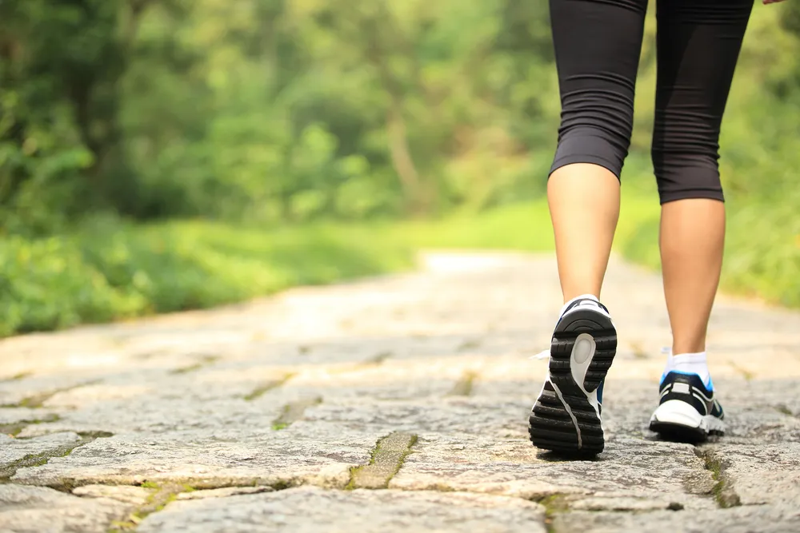

Exercise Tips to Help Manage Gout

Exercise may be the last thing on your mind when you’re experiencing a painful gout attack, but it can actually help manage the symptoms associated with a flare up. This is because regular exercise can help aid weight loss which in return, helps the body remove excess uric acid.
You might want to wait until the gout attack is over, but once it is, consider forming a regular exercise regimen right away.
Benefits of Exercise
Physical movement is useful for a variety of reasons:
- Aid and manage weight loss
- Increase range of motion
- Strengthen your joints
- Promotes bone strength
- Speed up recovery process
- Feel more energized
- Help control blood sugar
- Reduces risk for heart disease
Now that you know the benefits of exercise, we’d like to share some tips with you ranging from types of exercises you should do, to how you can make the most out of each session.
Drink Lots of Water
Dehydration can increase your chances of having a gout attack, so make sure you drink plenty of water especially when exercising. You lose a lot of fluid in your body through sweat and so you want to supplement that by drinking more water than usual. You’ll be taking more trips to the toilet than usual, but urinating helps you to expel the excess uric acid in your blood.
Track Your Weight Loss
When you’re overweight or obese, your body will naturally produce more uric acid. Those extra pounds can also take a toll on your joint. This is what exercise is for as it helps you to lose that excess weight. However, you’ll want to keep track of your weight as losing too much, too soon can lead to a gout attack.
Choose the Right Exercise
When it comes to physical activity and gout, there are certain forms of exercise that are more recommended. These exercises involve the right amount of movement without straining the body. Here are some examples…
Low Impact Cardio or Aerobic Exercise
Cardiovascular exercise is not just good for the heart, but also the lungs. This form of exercise works to efficiently metabolize acid in the body. Cardio can also help strengthen your lower body muscles, which is where gout flares tend to occur.
Some good examples of cardio activities to try are brisk walking , climbing stairs, riding a stationary bicycle, or dancing. Begin with just a few minutes each day and gradually increase the duration each day.
It doesn’t have to be complicated. Even a simple walk will do. The goal is to take 10,000 steps. If not, aim for at least 6,000 steps. I personally prefer walking at least 10,000 steps each day and sometimes ride my stationary bicycle while watching TV.
Swimming
Swimming is another form of aerobic exercise that provides a good cardio workout, but is easy on the joints since you’re able to perform movements without the impact of gravity. Like walking, you can begin with just a few minutes of swimming and build up toward 30 or 45-minutes. I love swimming laps, although it’s an exercise I mostly perform in the summer. You can still swim in the winter months, just find a nearby indoor pool that hosts public swimming hours.
Stretching or Yoga
Stretching is a great way to strengthen your joints and improve your range of motion. One of the best forms of stretching that is easy on your joints is yoga. What’s even better is that it doesn’t just provide relief — it has also been shown to ease anxiety.
Yoga is so easy to do that it can be practiced everyday. We all know that gout affects middle aged men and women. At this age, it can be difficult to shed off those extra pounds. But by performing light exercises such as yoga everyday, you can lose weight without having to do those intense workout programs.
I like to find some yoga exercise routines on YouTube and perform them at home. You can do that to!
Strengthening Exercise
Weak muscles can increase your risk of injury during a gout attack. One way to prevent that is by performing strengthening exercises like weight lifting or resistance exercises . When doing strength training, make sure to use elastic bands since they can help you maintain proper form. They’re also easier on your joints and help you prevent injury.
Like the other exercises we mentioned above, you’ll want to start slow. This is very important for avoiding injury. As you gain more strength, you can then increase the intensity of your workouts. You’ll find yourself bouncing back faster after you have a gout attack since you already are accustomed to carrying your own weight and other heavy objects.
I religiously go to the gym on Monday, Wednesday and Friday each week. My workout is only about 40-minutes long. That is all you need to build strength in your joints and muscles.
Squeeze in a Workout When You Can
Exercise is not really everyone’s favorite activity. However, it’s an essential component for a healthy life, especially if you have gout. You should always make time for exercise, even for just a few minutes each day.
But if you don’t have time one day, there’s an exercise regimen called the 7-Minute Workout which you can easily do at home or in the office. It involves a range of movements that keep your heart rate up, strengthens your bones, and stimulates your metabolism. This is what the 7-Minute Workout looks like.
- 30 seconds of jumping jacks
- 30 seconds of wall sit
- 30 seconds of push-ups
- 30 seconds of abdominal crunches
- 30 seconds of stepping up and down on the chair
- 30 seconds of squats
- 30 seconds of tricep dip on a chair
- 30 seconds of planking
- 30 seconds of high knees running in place
- 30 seconds of lunges
- 30 seconds of push ups and rotation
- 30 seconds of side punking
In between each exercise, you should spend 10-seconds to recover and catch your breath.
It seems like a lot but that’s exactly the point. It’s a workout that squeezes in all the important movements your body needs. After those 7-minutes, you’re done! You can go on with your day while receiving the benefits of a full workout. You can even do the 7-Minute Workout multiple times during the day. So, let’s say you do it two more times, that’s already 20-minutes of exercise! That’s a small fraction of your day.
Once your body gets used to the workout, you’ll find yourself doing it more. You get to enjoy those feel-good hormones after a workout which in turn leads to better health choices that can help with gout.
Source: https://activebeat.com/fitness/exercise-tips-to-help-manage-gout/